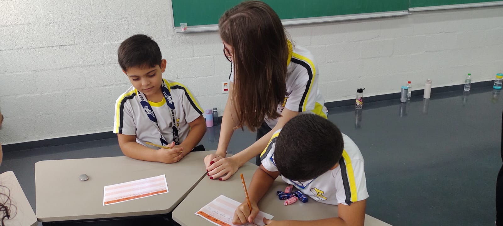
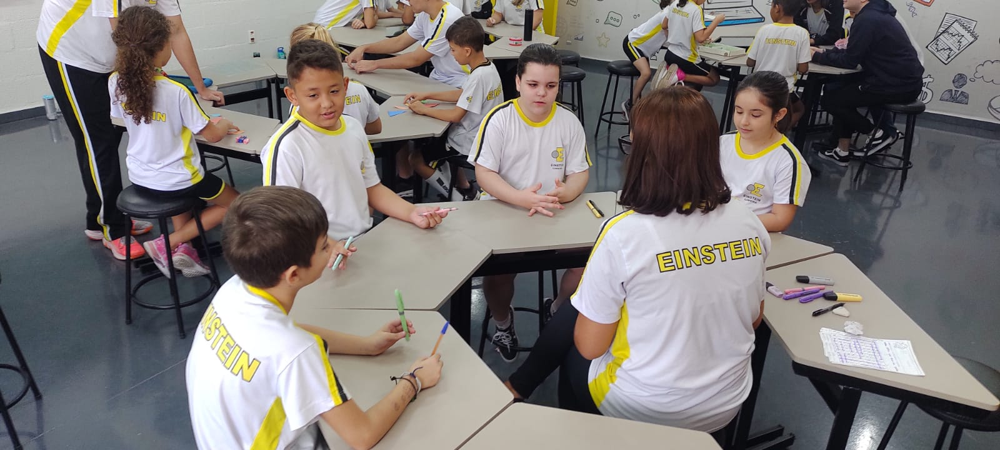

Boas práticas
por Luciene Cristina Cezário
Durante o ensino médio os adolescentes já possuem mais independência à medida que se engajam nos estudos e desenvolvem habilidades acadêmicas e socioemocionais. Pensando em oferecer diferentes caminhos de aprendizagem aos alunos, de acordo com suas preferências e aptidões, os alunos do 2° e 3° do Itinerário de Linguagem, sob a minha supervisão, optaram por trabalhar nesse mês o projeto “A linguagem dos jogos de tabuleiro”.
Os estudantes foram instigados à pesquisa teórica de diversos jogos, a construção material e preparação de aulas práticas para os alunos menores do 2° ano, das professoras Elisandra e Cíntia. Além desenvolver e manter laços sociais, a atividade propunha estimular o desenvolvimento do raciocínio lógico, da cooperação, criatividade, coordenação e imaginação dos envolvidos. Através do jogo pode-se oportunizar aos alunos aprenderem a respeitar regras, discutir e inventar, Isso porque o jogo constitui-se em “uma atividade organizada por um sistema de regras, na qual se pode ganhar ou perder”.

